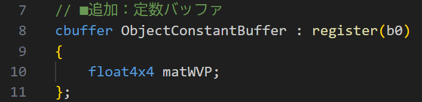

今回は3D描画を行います。
ソースコードは、GitHubに上がっているものを見てもらえればと思います。
今回はポリゴンを3D的に回転させたいと思います。 3Dで描画するのに「深度バッファーの導入」と「定数バッファーの導入」があります。 深度バッファーは、現在の主たるレンダリング法であるZバッファー法を使うために必要です。 定数バッファーは、定数は3D空間での座標変換を行う行列をシェーダーに渡すために使います。
Zバッファー法での描画を行うために深度バッファーを導入して、深度バッファーの奥行き値と ポリゴンの奥行値を比較して、奥行き値が小さいものを描画するようにします。
深度バッファーを導入して使う処理を実現するには、次の変更を行います。
深度バッファーはレンダーターゲットと似たようなものです。色情報ではなくて、奥行の情報を記録します。
深度バッファーを扱うためのオブジェクトとして、
バッファー自体のメモリに関連した「ID3D12Resource」（今回は、「深度ステンシル_」という名称）と、
rtvヒープに対応した「ID3D12DescriptorHeap」の「dsvヒープ_」を用意します。
深度バッファーは、表示するときには使わないのでフレームバッファーのように複数枚を保持する必要はなく、
一枚のバッファーに対して毎フレーム書き込んでいきます。
実際に変数を宣言するコードは次のようになります。レンダーターゲットのオブジェクトと近い場所に配置してみました。
[Application.h]
深度ステンシルビューデスクリプターヒープは、レンダーターゲットビューの深度版です。 CreateDescriptorHeapメソッドで生成します。 レンダーターゲットビューとの違いは、D3D12_DESCRIPTOR_HEAP_DESCのTypeメンバーに D3D12_DESCRIPTOR_HEAP_TYPE_DSVを指定して呼び出すという事です。 また、枚数は1枚だけしか必要でないので、NumDescriptorsメンバーは1にします。
[Application.cpp]
深度バッファーは、テクスチャと同じようにCreateCommittedResourceを使って生成します。
CreateCommittedResourceの引数にテクスチャと同じようにヒーププロパティやリソース記述子を指定します。
深度バッファーは、テクスチャとフォーマットが違います、今回はDXGI_FORMAT_D32_FLOATを指定します。
「D」が付くフォーマットが深度用のフォーマットです（今回は使いませんが、ステンシルバッファーは「S」がついたフォーマットを使います）。
他に、CreateCommittedResourceの引数として、クリア値を渡します。
D3D12_CLEAR_VALUEで、深度バッファーのフォーマットとクリア値を指定します。
フォーマットは、リソース記述子で指定するフォーマットと同じものを指定します。
また、引数のD3D12_RESOURCE_STATESの値として、D3D12_RESOURCE_STATE_DEPTH_WRITEを指定します。
[Application.cpp]
ビューも作成しています。深度バッファー用のビューは、深度ステンシルビューという専用の物です。 D3D12_DEPTH_STENCIL_VIEW_DESC構造体を使って、深度バッファーのフォーマットや、 深度バッファーのリソースのアドレスを指定して、CreateDepthStencilViewメソッドで生成します。 引数としては、深度バッファーのアドレスと、ビューを書き込む先のdsvヒープのアドレス（ハンドル）を指定します。
深度バッファーの使用を有効にするには、PSOの設定を変更する必要があります。
pso記述子のDepthStencilStateに深度バッファーのテスト内容の設定を記述します。
と言っても、「CD3DX12_DEPTH_STENCIL_DESC()」を使うと
深度バッファーを設定するD3D12_DEPTH_STENCIL_DESCの標準的な設定がされるので、
先ずは、それを使って深度バッファーのテストを有効にします。
[Application.cpp]
深度バッファーを今まで設定してきていない人は、CD3DX12_DEPTH_STENCIL_DESC()の中身をみて、どのような設定項目があるか勉強しておくと良いでしょう。
凝ったことをすると、別の設定が必要になるので、書き換えていくことになります。
[d3dx12_core.h]
深度バッファーを使うためには、描画時に深度バッファーを指定する必要があります。
描画時に、深度バッファーのアドレスを指定して、描画を行います。
具体的には、OMSetRenderTargetsメソッドの引数に深度バッファーのアドレス（ハンドル）を指定します。
[Application.cpp]
また、レンダーターゲットに書き込む前に、深度バッファーをクリアする必要があります。
深度バッファーのクリアは、ClearDepthStencilViewメソッドを使います。
ClearDepthStencilViewメソッドの呼び出しでは、D3D12_CLEAR_FLAG_DEPTHを指定して、
深度バッファーしかクリアしないようにします。
次の値は、クリア値です。クリア時に直接値を指定できます。
[Application.cpp]
Zバッファー法で描画をする際は、オブジェクトの各頂点の位置をスクリーン座標に変換する必要があります。 座標の変換は頂点シェーダーで行いますが、実際に行う事は、頂点の位置を座標変換して、 クリップ座標系での深度を含んだスクリーンの位置を計算します。
この計算のために、オブジェクトの位置を変換する行列をシェーダーに渡す必要があります。 オブジェクト毎に使うパラメーターを渡すには、定数バッファーを使います。
定数バッファーを導入して使う処理を実現するには、次の変更を行います。
頂点シェーダーに頂点の位置を変換する行列を受け取るようにします。
cbufferという種類の構造体のような定数バッファーというものに、行列のデータを受け取るメンバーを追加します。
今回は、4x4の行列を使うのでfloat4x4型のメンバーを追加します。
cbufferは、テクスチャと同じように、グローバル変数として宣言します。
また、registerキーワードを使って、どのレジスタに割り当てるかを指定します。
[shaders.hlsl]

頂点シェーダーでは、定数バッファーに追加した行列を位置に作用（乗算）して座標変換をします。
定数バッファー内に追加したメンバーの名前を直接使って、行列を指定します。
行列の乗算は、「mul」命令を使います。
シェーダーでは、ベクトルを行列の左に書きます。
この行列のメモリレイアウトは列優先 (column_major)となっています。
一方、この後でてくるDirectxMathの行列のメモリレイアウトは行優先 (row_major)となっているので、
転置計算が必要になってきます。
[shaders.hlsl]
定数バッファーに関連したメンバーを追加します。
定数バッファーは、GPUから見えるメモリに置かれる情報なので、ID3D12Resourceインターフェイスのリソースとして扱われます。
[Application.h]
また、今回は、オブジェクトをくるくる回すので、毎フレーム定数バッファーを書き換えます。
これを行うのに、CPUから書き込みやすいメモリ（メインメモリ）に定数バッファーを作成して、
CPUが書き込んだら、GPUに転送するという方法を取ります。
そのための、CPU側のメモリにGPUから読めるメモリにある定数バッファーと同じだけのマップされた定数バッファーのメモリを用意します。
このメモリは、プログラムが側から扱いやすいように「オブジェクト定数バッファ」という構造体を作って、その構造体のポインターとしてマップされたメモリを管理します。
新たに定義する構造体ですが、定数バッファーは、256バイトのアライメントである必要があるので、
使われていない部分をchar型の配列で埋めておきます。
メンバーである行列の型はDirectXMathライブラリの型のXMFLOAT4X4型を使います。
[Application.h]
途中計算を行うための行列もメンバー変数として確保します。具体的には、ビュー行列と射影行列を用意します。
これらの行列では、XMMATRIX型を使います。
XMFLOAT4X4型はデータを転送するための型で、CPU側で計算を行うときはXMMATRIX型を使います。
XMMATRIX型は、SIMD命令をことができる型で高速計算できますが、SIMDレジスタであったりとメモリに情報が存在しているとは限りません。
一方、オブジェクト定数バッファは確実にメモリになければらない転送用の型なので、別の型（XMFLOAT4X4）が使われています。
なお、回転角度を保持するためのメンバー変数も用意しました。
[Application.h]
メンバー変数を生成します。
定数バッファーを、CreateCommittedResourceメソッドを使って生成します。
定数バッファーは頂点バッファーと同じように、データのサイズでバッファーを確保します。
[Application.cpp]
定数バッファーを更新すために、マッピングを行います。
マッピングは、ID3D12ResourceのMapメソッドを使います。
ただし、毎フレームバッファーの値を更新するので、ここでは値を入れてUnmapするのではなく、Mapして開きっぱなしにします。
[Application.cpp]
一応値を初期化しておきましょう。
初期化データは、一次変数（初期化データ）に、行列のデータを準備して、マップされたアドレスにコピーします。
XMMATRIXをXMFLOAT4X4型に変換するには、XMStoreFloat4x4関数を使います。
格納する行列は、ビュー行列と射影行列の積を取ったものにします。
DirectXMathライブラリとシェーダーのメモリレイアウトの行優先と列優先の違いを考慮して、XMMatrixTranspose関数を使って転置してから転送します。
[Application.cpp]
ビュー行列や射影行列は、XMMatrixLookAtLHやXMMatrixPerspectiveFovLHといった便利関数が
DirectXMathライブラリに用意されているので、それを使います。
中身がどうなっているのか知らなければ、DirectXMathライブラリのソースコードを見たり、CGの本を調べてみてください。
[Application.cpp]
定数バッファーをシェーダーと結びつけるためにビューを作成します。
定数バッファーが使うビューは、CBV（Constant Buffer View）と呼ばれています。
今回は、既に用意されているヒープ（オブジェクトヒープ_）にCBVを作成します。
イメージとしては、次の様な感じで、1つのデスクリプターヒープに、テクスチャのSRVと行列のCBVを作成します。
ルートパラメーターを分けることで、頂点シェーダーから見えるリソース（行列）と、
ピクセルシェーダーから見えるリソース（テクスチャ）を分離します。
コードの修正としては、オブジェクトヒープを作るコードを修正して、デスクリプター数（NumDescriptors）を1から2に増やします。
[Application.cpp]
また、生成したオブジェクトヒープのアドレスと、SRVの大きさを取得しておきます。
[Application.cpp]
取得した情報を使ってSRVの次のメモリアドレスを計算して、そのヒープのハンドルの場所に
CreateConstantBufferViewメソッドを使って定数バッファーのビューを作成します。
ビューの作成に必要な情報は定数バッファーのGPUでのアドレスとサイズになります。
[Application.cpp]
ルートシグネチャーの修正をします。
今回は、ルートパラメーターとデスクリプターレンジがテクスチャ用と定数バッファー用で2つになります。
それぞれ、配列として確保していたので、配列の数を増やします。
デスクリプターレンジは、片方がテクスチャー(SRV)用で、もう1つが定数バッファー(CBV)用になります。
ルートパラメーターは、テクスチャ用がピクセルシェーダーから見られて、行列用が頂点シェーダーから見えるようにします。
[Application.cpp]
また、SRVとCBVのアドレスをルートパラメーターに登録します。
ルートパラメーター0のデスクリプターテーブルにSRVのアドレスを、ルートパラメーター1のデスクリプターテーブルにCBVのアドレスを登録します。
この登録は、コマンドリストにデスクリプターヒープを設定する際に行います。
[Application.cpp]
後は、定数バッファーを更新してアニメーションを実現しましょう。
基本的なアニメーションはUpdate関数の中で行います。
アニメーションは簡単な回転で、毎フレーム、角度を少しだけ増やして、2πを超えたら2π減らします。
[Application.cpp]
描画時は、Updateで更新された角度を使って、回転行列を計算します。
回転行列は、XMMatrixRotationY関数を使って、Y軸を中心に回転させます。
この回転行列をワールド行列として、全体の変換行列を計算します。
また、初期化時と同様に、XMStoreFloat4x4関数を使って定数バッファーに書き込みます。
[Application.cpp]
基本的な3D描画ができました。
少しづつクオリティを上げていきましょう。